1.简答题 8个小题 每题5分 共40分
2.系统分析题 2小题 每题15分 共30分
3.系统设计题 2小题 每题10分 共20分
4.实验考查 10分
OSI 分层: 物理层、数据链路层、网络层、传输层、会话层、表示层、应用层
TCP/IP 分层: 网络接口层、网际层、运输层、应用层
中继器: 物理层
集线器: 物理层
交换机: 数据链路层
网卡：数据链路层
路由器: 网络层
计算机: 应用层
发送时延 = 数据帧长度(bit) / 发送速率(bit/s) 又称传输时延
传播时延 = 信道长度(m) / 电磁波在信道上的传播速率(m/s) = 带宽时延积 / 带宽 注意不是传输时延
带宽时延积 = 传播时延×链路带宽
总时延 = 传播时延 + 传输时延(发送时延) (+ 处理时延 + 排队时延)
注意单位: b 和 B
单位转换: 10^3
1. 确定子网需求: 确定需要划分的子网数量以及每个子网的主机数量
2. 选择合适的子网编码: 根据子网需求选择合适的子网掩码，确保满足子网数量和主机数的需求
3.计算子网地址和广播地址：使用选定的子网掩码计算每个子网的子网地址和广播地址
4. 分配IP地址：为每个子网分配IP地址范围，确保地址的唯一性和连续性
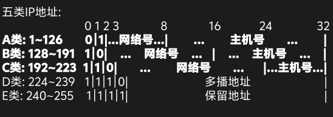

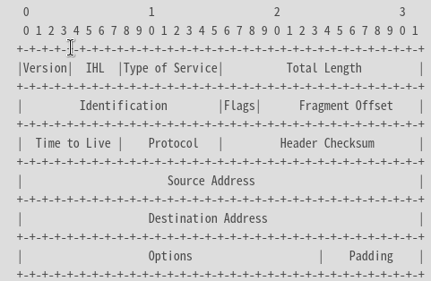
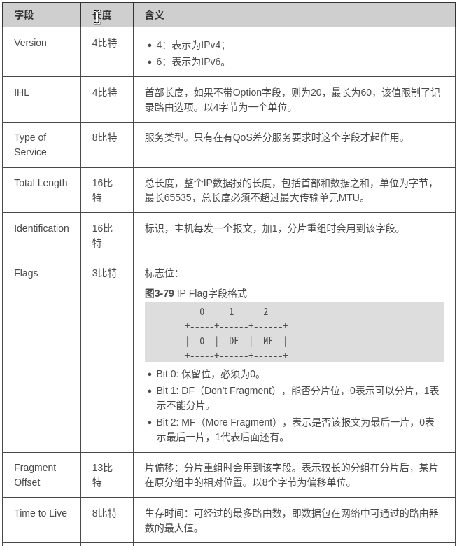
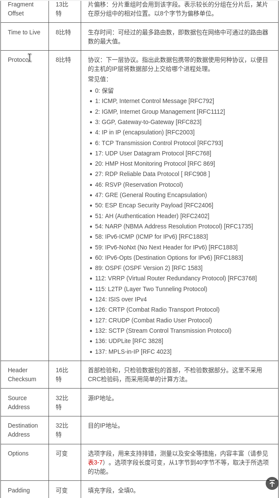

1.接收数据包
2.解析目标IP地址
3.查询路由表
4.下一跳确定
5.转发数据包
6.更新数据包的TTL
7.ARP解析: 如果下一跳是一个直接连接的设备（如同一局域网内的主机），路由器可能需要进行ARP（Address Resolution Protocol）解析，以获取目标设备的MAC地址，这是通过发送ARP请求来实现的。
(循环往复)
(1). RIP是一种分布式的，基于距离向量的路由选择协议。运行RIP协议的路由器，维护从它自己到其他每一个目的网络的距离记录。
(2). 建立过程:
(3). 路由表项: 目的网络、距离、下一跳

“开放”标明OSPF协议不是受某一家厂商控制,而是公开发表的;“最短路径优先”是因为使用了Dijkstra提出的最短路轻算法SPF.OSPF最主要的特征就是使用分布式的链路状态协议。
使用洪泛法向自治系统内所有路由器发送信息,即路由器通过输出端口向所有相邻的路由器发送信息,而每一个相邻路由器又再次将此信息发往其所有的相邻路由器。（类似广播）
最终整个区域内的路由器都得到了这个信息的副本。
发送的信息就是与本路由器相邻的所有路由器的链路状态(本路由器和哪些路由器相邻，以及该链路的度量/代价——费用、距离、时延、带宽等）。
只有当链路状态发生变化时,路由器才向所有路由器洪泛发送此信息。
最后，所有路由器都能建立一个链路状态数据库，即全网拓扑图。
与其他AS的邻站BGP发言人交换信息。
交换的网络可达性的信息，即要到达某个网络所要经过的一系列AS。
发生变化时更新有变化的部分。
BGP所交换的网络可达性的信息就是要到达某个网络所要经过的一系列AS。
当BGP发言人互相交换了网络可达性的信息后，各 BGP 发言人就根据所采用的策略从收到的路由信息中找出到达各 AS 的较好路由。（不一定最佳）
交换信息交换的是：路径向量
报文:
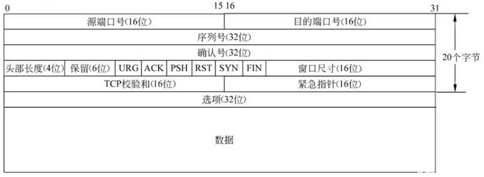
【重要的字段】：
源端口号与目的端口号：标识了发送方与接收方的地址，IP地址和端口号合称为套接字。
序列号和确认号：32位序列号与32位确认序号：序列号与确认号可以理解成两个通信进程在收发数据的时候互相应答的信息。比如说：A进程从序列号1000开始给B进程发送数据，发送五个数据。那么在B收到数据回复的时候，这里A的确认序列号应该是从1006，如果不是1006，比如说是1003，那就意味着1004、1005数据包B没有收到，于是A启动重发机制。这也就保证了数据的可靠性，也是TCP的特点之一。序列号是进程发送消息的号码，而确认号是期望目的进程返回的号码。进行比对，从而验证数据包是否到达。
4位TCP报头长度：这里的四位TCP报头长度，可以理解成四个比特位表示长度，四位比特位表示的值乘以四就是该TCP头部的长度。由图可知，报头最短长度为20字节，也就是说这里的四位TCP报头长度默认为0101。并且TCP报头长度不可超过15*4=60个字节。
标志位：共6个，即URG、ACK、PSH、RST、SYN、FIN等，具体含义如下：
URG：紧急指针（urgent pointer）有效；
ACK：确认序号有效；
PSH：接收方应该尽快将这个报文交给应用层；
RST：重置连接；
SYN：发起一个新连接；
FIN：释放一个连接。
16位窗口大小：窗口大小标志着TCP缓冲区内部剩余空间的大小，起到一个流量控制的作用。如果窗口满了，那么这个时候是不允许数据接收的。后面到达的数据会被丢失。
16位校验和：这里的校验和由发送端填充，CRC校验。接收端校验数据的时候如果校验不通过，那么认为数据有问题。此处的校验和不仅仅校验TCP首部，还校验数据部分。
16位紧急指针：标识哪部分的数据为紧急数据
在 TCP/IP 协议中，TCP 协议提供可靠的连接服务，采用三次握手建立一个连接。
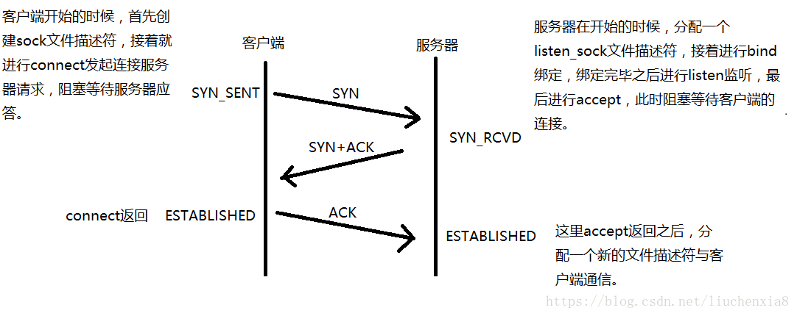
第一次握手：Client先产生一个初始序列号Seq = ISN（C）， 并将该数据包发送给Server，Client进入SYN_SENT状态，等待Server确认。
第二次握手：Server收到数据包后也发送自己的SYN报文作为响应，并初始化序列号Seq = ISN（S），为了确认客户端的Seq，服务器将客户端发送的Seq加1，作为ACK发送给客户端，Server进入SYN_RCVD状态。（SYN为synchronize的缩写，ACK为acknowledgment的缩写）。
第三次握手：为了确认服务器的SYN，客户端将服务器发送的Seq加1，作为ACK发送给服务器。Client和Server进入ESTABLISHED状态，完成三次握手，随后Client与Server之间可以开始传输数据了。
通过这样的三次握手，客户端与服务端建立起可靠的双工的连接，开始传送数据。 三次握手的最主要目的是保证连接是双工的，可靠更多的是通过重传机制来保证的。
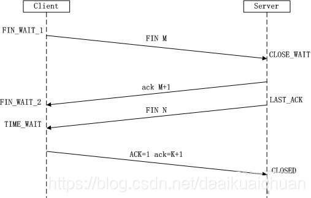
第一次挥手：Client发送一个FIN，用来关闭Client到Server的数据传送，Client进入FIN_WAIT_1状态；
第二次挥手：Server收到FIN后，发送一个ACK给Client，确认序号为收到序号+1（与SYN相同，一个FIN占用一个序号），Server进入CLOSE_WAIT状态；
第三次挥手：Server发送一个FIN，用来关闭Server到Client的数据传送，Server进入LAST_ACK状态；
第四次挥手：Client收到FIN后，Client进入TIME_WAIT状态，接着发送一个ACK给Server，确认序号为收到序号+1，Server进入CLOSED状态，完成四次挥手。
在确认应答机制中，对每一个发送的数据段，都要给一个ACK确认应答。收到ACK后再发送下一个数据段。这样做有一个比较大的缺点，就是性能较差。尤其是数据往返时间较长的时候。那么我们可不可以一次发送多个数据段呢：滑动窗口。所谓的流量控制就是让发送方的发送速率不要太快，让接收方来得及接受。利用滑动窗口机制可以很方便的在TCP连接上实现对发送方的流量控制。
【窗口类型】：
接收端窗口rwnd：接收端缓冲区大小。接收端将此窗口值放在 TCP 报文的首部中的窗口字段，传送给发送端；
拥塞窗口cwnd：发送端缓冲区大小；
发送窗口swnd：发送窗口的上限值 = Min [rwnd, cwnd]。
【滑动窗口】：
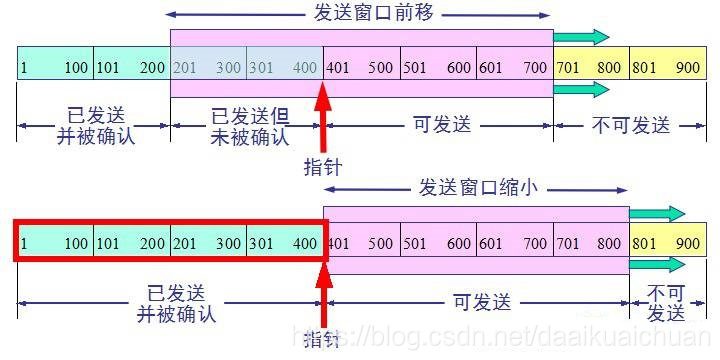
发送端已发送了 400 字节的数据，但只收到对前 200 字节数据的确认，同时窗口大小不变。还可发送 300 字节；发送端收到了对方对前 400 字节数据的确认，但对方通知发送端必须把窗口减小到 400 字节。现在发送端最多还可发送 400 字节的数据。
拥塞控制也就是考虑当前的网络环境，动态调整窗口大小，没有发生拥塞情况，则窗口增大，拥塞了窗口减小，如此往复，最终应该接近与接收端的窗口大小。
【慢开始和拥塞避免】：
在开始发送信息时，由于不知道具体的网络环境，为避免大量信息造成的拥塞现象，此时的拥塞窗口以最小值（即拥塞窗口和接收端窗口中的较小值）进行数据发送，并设定门限值作为慢启动算法和拥塞避免算法的分割点。慢启动是指以最小的拥塞窗口按照指数形式递增，达到门限值后，以拥塞避免算法，即线性递增方式增大拥塞窗口（这里递增时间间隔为一个往返时间RTT）。
在上述过程中，无论是窗口大小指数递增或者线性递增，当发生拥塞现象，则门限值更新为当前窗口大小的一半，拥塞窗口大小变为最小值，重复上述递增过程（此时属于网络环境限制，所以在接收端和拥塞窗口两个限制条件中选择拥塞窗口作为限制）。
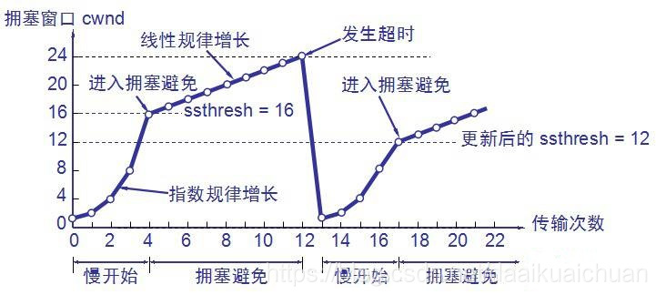
【快重传和快恢复】：
当发送端连续收到三个重复的ack时，表示该数据段已经丢失，需要重发。当收到三个表示同一个数据段的ack时，不需要等待计时器超时，立即重新发送数据段（当时这三个ack要在超时之前到达发送端），因为能够收到接收端的ack确认信息，所以数据段只是单纯的丢失，而不是因为网络拥塞导致，所以此时不需要拥塞窗口更新为最小值进行慢启动（如果这样的话，反倒因为拥塞窗口的增长需要时间，可能导致性能降低），此时需要设置拥塞窗口大小为：门限值大小+3，当然此处的门限值已经更新为拥塞窗口值的一半大小，该行为也就是所谓的“乘法减少”，更新之后按照拥塞避免算法继续进行。
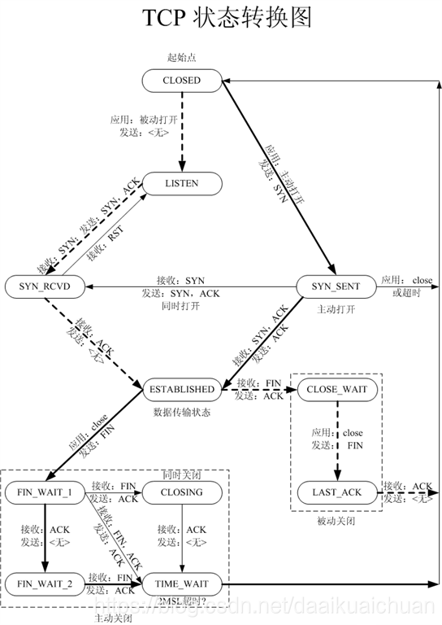
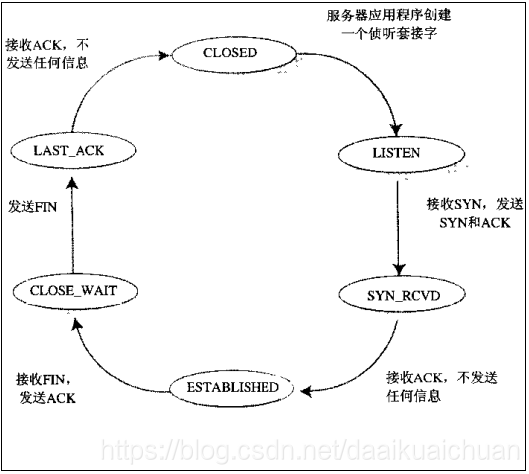
【客户端（虚线）】：
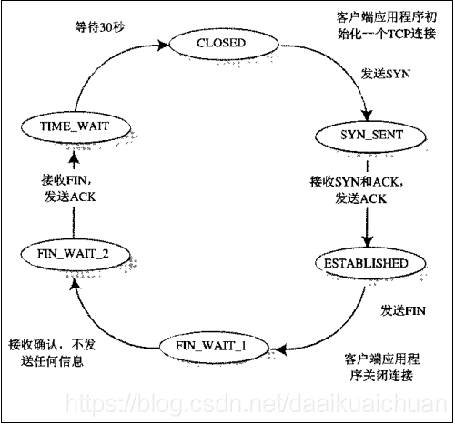
浏览器: HTTP/HTTPS 协议，(FTP 协议)
FTP下载器： FTP 协议
邮箱: POP3、SMTP、IMAP
WireShark 解析字段
R1[Huawei] sysname R1